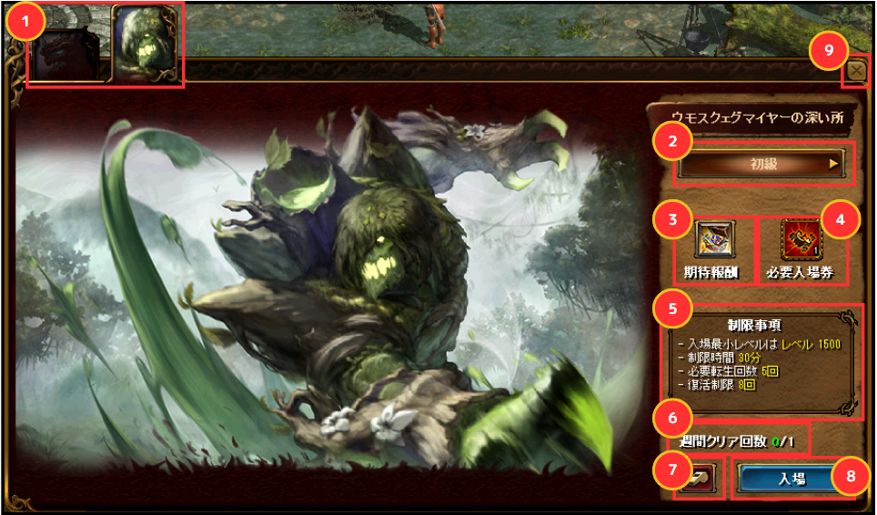
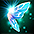
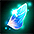
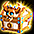

メニュー
トップ >>
ダンジョン >>
精鋭討伐 スザルアンキール
ウモスクェグマイヤー方面で挑戦できる高難易度コンテンツで、討伐すると 1250ULT防具選択BOX や、
解放系道具箱 や 超越の書 系の強化素材をまとめて獲得できます。
2024年2月16日 実装
入場方法
入場券（精鋭討伐チケット）
クリア報酬
トレジャーボックス出現アイテム
関連ページ
入場画面。難易度・必要入場券・週間クリア回数・獲得アイテムが確認できる。
難易度ごとに必要なチケットが異なり、低難易度のチケットを合成して上位チケットを作る 仕組みです。
※ 上位チケットを下位に戻すことはできません。
※ 入場券は精鋭討伐入場時にチェックされ、クリア時に消費 されます。クリアできなかった場合は消費されません。
※ 入場券の合成は精鋭討伐入場NPCのほか、インベントリ内のチケットアイコンを右クリックでも実行可能。
旧名称（妖精の翼類）からのリネーム対応は以下の通り：
難易度が高いほど コア報酬の種類と個数が増加 します。
＜タビアクートとの違い＞
タビアクート（1250精鋭）のコア報酬は基本 775UMU/1000UMU/1100DXU 帯ですが、スザルアンキール（1500精鋭）は 1250ULT防具選択BOX がコア報酬に含まれる点が大きな差です。1250ULT防具を狙う場合の主要入手手段になります。
※ 多くは取引可能。出現は確率制で、毎回1個のみ獲得できます。
出典: 公式お知らせ「2月16日(金)アップデート内容のご案内」(2024年2月16日)
精鋭討伐 スザルアンキール
1500レベル以上の5転生キャラクター専用の精鋭討伐ボス。通称「1500精鋭」。ウモスクェグマイヤー方面で挑戦できる高難易度コンテンツで、討伐すると 1250ULT防具選択BOX や、
解放系道具箱 や 超越の書 系の強化素材をまとめて獲得できます。
2024年2月16日 実装
入場方法
入場券（精鋭討伐チケット）
クリア報酬
トレジャーボックス出現アイテム
関連ページ
入場方法
| 入場条件 |
5転生以上 / 1500レベル以上 先行クエスト「ウモスクェグマイヤーの深い所」を推奨 ※ 先行クエストはキャンセル可能。未クリアでも入場自体は可能 ※ 先行クエストは「ガレリオン[ウモスクェグマイヤー編]」クリア後に出現 |
|---|---|
| 入場場所 |
原始要塞セルーテ NPC「バンダラーカ」 ガレリオン野営地 NPC「妖精石交感師」 ※ 入場券を所持した状態で会話することで精鋭討伐UIが開く |
| 入場頻度 | 週1回（毎週月曜00:00リセット） ソロ／パーティーいずれも可 ※ パーティープレイ時は全員が同じフィールド内にいる必要あり ※ パーティーメンバー全員が難易度に合った入場券を保有していないと入場不可 タビアクート精鋭討伐とは入場回数を共有しません |
| 難易度 | 初級（荒れ地） / 中級（漆黒） ※ 上級（深淵）・超級（悪夢）は今後追加予定 |
| 復活制限 | キャラクターの復活回数は 8回まで ※ [復活確率] オプションは適用されません ※ 強制終了等で一定時間離脱すると進行状況が初期化されます |

入場画面。難易度・必要入場券・週間クリア回数・獲得アイテムが確認できる。
入場券（精鋭討伐チケット）
入場券は ヤティカヌ / ウポスマイヤー / ウモスクェグマイヤー フィールドの REDSTONEのオーラから一定確率で獲得できます。難易度ごとに必要なチケットが異なり、低難易度のチケットを合成して上位チケットを作る 仕組みです。
※ 上位チケットを下位に戻すことはできません。
| 難易度 | 必要入場券 | 合成材料 |
|---|---|---|
| 荒れ地（初級） |  精鋭討伐チケットの欠片 ×1 |
— |
| 漆黒（中級） |  復元された精鋭討伐チケット ×1 |
精鋭討伐チケットの欠片 ×60 |
| 深淵（上級） | 完成した精鋭討伐チケット ×1 | 復元された精鋭討伐チケット ×6 |
| 悪夢（超級） |
※ 入場券は精鋭討伐入場時にチェックされ、クリア時に消費 されます。クリアできなかった場合は消費されません。
※ 入場券の合成は精鋭討伐入場NPCのほか、インベントリ内のチケットアイコンを右クリックでも実行可能。
旧名称（妖精の翼類）からのリネーム対応は以下の通り：
- 妖精の翼のカケラ → 精鋭討伐チケットの欠片
- 妖精の翼 → 復元された精鋭討伐チケット
- 煌めく妖精の翼 → 完成した精鋭討伐チケット
クリア報酬
クリア時の報酬は 確定枠 と コア報酬枠（確率） の2系統に分かれています。難易度が高いほど コア報酬の種類と個数が増加 します。
| 確定枠 | ||
|---|---|---|
 |
スザルアンキールトレジャーボックス[精鋭討伐] | 使用すると下記アイテムのうち1個を確率獲得（中身一覧） |
| — | 経験値 | 難易度が高いほど獲得経験値が増加 |
| — | ひび割れた邪念 | 限界突破5 クエストの素材 |
| コア報酬（いずれか1つを確率獲得） | ||
| — | 1250ULT防具選択BOX | 1250ULT防具一覧 から1種を選択して獲得 |
| — | 1250ULT 等級アイテム | — |
| — | 1000ULT 等級アイテム | — |
| — | 775ULT 等級アイテム | — |
| — | 1100DX 等級アイテム | — |
＜タビアクートとの違い＞
タビアクート（1250精鋭）のコア報酬は基本 775UMU/1000UMU/1100DXU 帯ですが、スザルアンキール（1500精鋭）は 1250ULT防具選択BOX がコア報酬に含まれる点が大きな差です。1250ULT防具を狙う場合の主要入手手段になります。
トレジャーボックス出現アイテム
スザルアンキールトレジャーボックスから出現する全アイテム一覧。※ 多くは取引可能。出現は確率制で、毎回1個のみ獲得できます。
| 出現アイテム一覧 | |
|---|---|
| 解放オプション変換器 | 超越の書『魔力の暴走』 |
| ワンタッチ道具箱[3スロット・1解放] | 超越の書『覚醒』 |
| 解放オプション変換器・改 | 超越の書『適応力』 |
| 製錬ガードⅡ | 超越の書『耐性』 |
| スペシャル等級白紙図案書 | 超越の書『魔力吸収』 |
| スロット集中錬成道具箱 | 超越の書『時空の歪み』 |
| スロット集中錬成道具箱[S] | 超越の書『楔』 |
| 運命のOP選択チケット | 超越の書『魔力増幅』 |
| レプリカ封印解放道具箱 | 超越の書『筋力集中鍛錬』 |
| 宿命のOP魔法のお守り箱 | 超越の書『知識集中鍛錬』 |
| 完全封印解放道具箱 | 超越の書『敏捷集中鍛錬』 |
| 特製封印解放道具箱・改 | 超越の書『知恵集中鍛錬』 |
| 超越の書『物理強打』 | 超越の書『健康集中鍛錬』 |
| 超越の書『魔法強打』 | 超越の書『カリスマ集中鍛錬』 |
| 超越の書『運集中鍛錬』 | |
関連ページ
- 精鋭討伐 ハシュラム（900レベル以上）
- 精鋭討伐 タビアクート（1250レベル以上）
- 精鋭討伐 ヴェノムベッセル（2000レベル以上）
- 1250ULT防具一覧（コア報酬の選択先）
- 限界突破クエスト（ひび割れた邪念の用途）
出典: 公式お知らせ「2月16日(金)アップデート内容のご案内」(2024年2月16日)